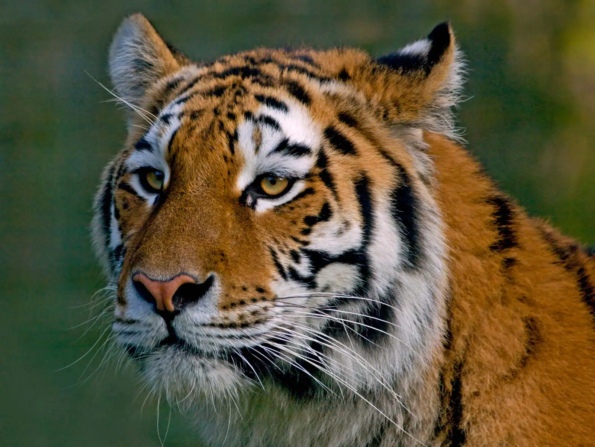
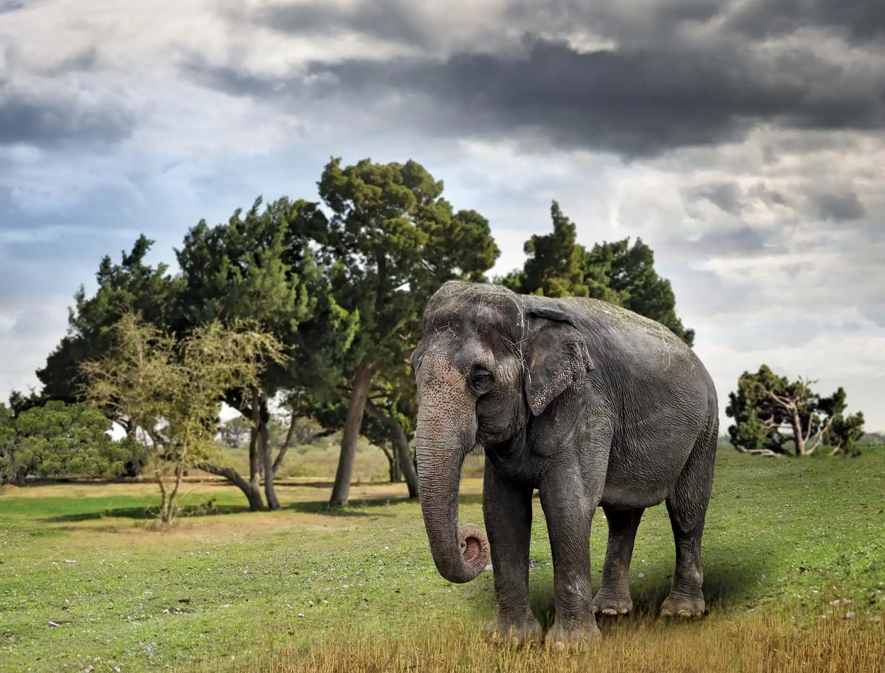
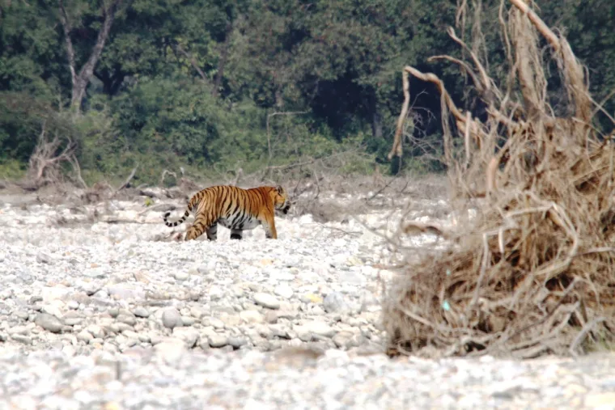
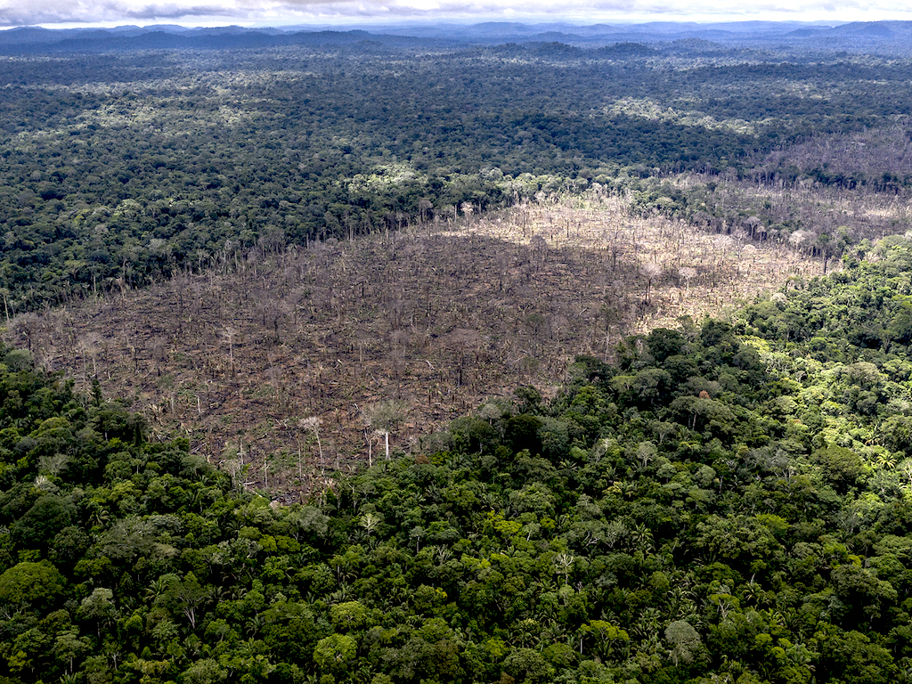

Endangered Land Species

Giant Panda
Everyone loves a panda…they might be the kitschiest animal humanity has driven to the brink of extinction yet. From stuffed animals to martial arts-trained CGI abominations, we just can’t seem to get enough of the bi-colored beasts. Though their “aww factor” may verge on the cloying, it hasn’t been without effect. China, which is home to the remaining wild population of fewer than 2,500 individuals, has since the late 1980s instituted more stringent habitat protections and poaching has all but ceased. Their status is still tenuous, though. Their range is fragmented and they are still subject to disease, occasional predation, and starvation when large swathes of the bamboo on which they feed completes its life cycle and dies.

Tiger
William Blake’s “forests of the night,” the stalking grounds of the six subspecies of tiger, are burning bright. Slash-and-burn agriculture, along with logging, and human encroachment, have hugely diminished the habitat available to these felines, which require extensive ranges capable of supporting the large herbivores that constitute the bulk of their diets. Poaching—for trophies and body parts used in Asian “medicine” —is thought to pose the greatest threat to tigers. Probably fewer than 4,000 are left in the wild. In 2014, China explicitly outlawed the consumption of endangered species, including tigers, whose bones, penises, and other organs are superstitiously believed to have magical curative powers.

Asian elephant
The IUCN’s best guess on the current population of Asian elephants, which inhabit 13 countries, is around 40,000–50,000. That number may be far lower; some regions inhabited by the lumbering pachyderms are inaccessible due to the terrain or to political volatility. Over 50% of the population is concentrated in India. The burgeoning human population there—and elsewhere in Asia—creates conflicts for space and resources. And while the tusks of Asian elephants are much smaller than those of their African counterparts, the Asian species is still poached for its ivory, meat, and skin.
Habitat Loss

Panda:Infrastructure development
China’s Yangtze Basin region holds the panda’s primary habitat. Infrastructure development (such as dams, roads, and railways) is increasingly fragmenting and isolating panda populations, preventing pandas from finding new bamboo forests and potential mates. Forest loss also reduces pandas’ access to the bamboo they need to survive. The Chinese government has established more than 50 panda reserves, but only around 67% of the total wild panda population lives in reserves, with 54% of the total habitat area being protected.

Tiger:Agriculture growth
In some parts of the world including India, Nepal, Bhutan, Russia and China, the population of tigers is either stable or increasing. However, in Southeast Asia, the population of tigers has been rated endangered and numbers are declining dramatically. Tigers, also known as ‘Big Cats,’ play a critical role in the ecosystem. As the homelands of these creatures, including mountains, jungles and long grasses become limited due to agriculture growth, timber cutting, new infrastructures and human and industrial settlement, tigers are pushed into smaller areas of land and will not survive.

Elephant:Humans overstepping
Elephants are the first species on our endangered list due to habitat loss. Elephants are not only seen as a cultural icon throughout India,
they also help to maintain the integrity of the forests and grasslands.
An increase in the human population throughout India has left little shared land for these magnificent creatures.
Due to humans overstepping into protected areas and clearing forests for roads and other development, this is causing a significant reduction in these beloved animal’s homes. Indian elephants are left with no other choice but to confine to areas without reliable food and shelter.